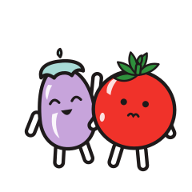
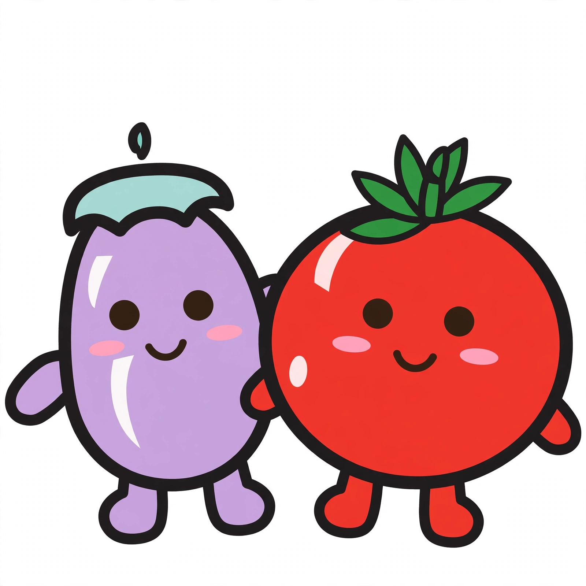
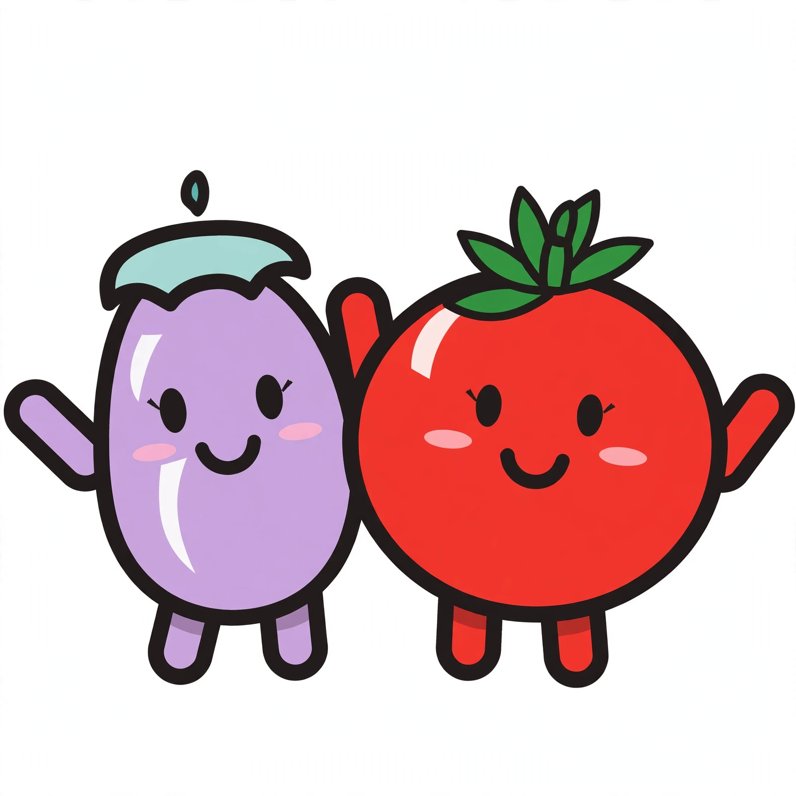
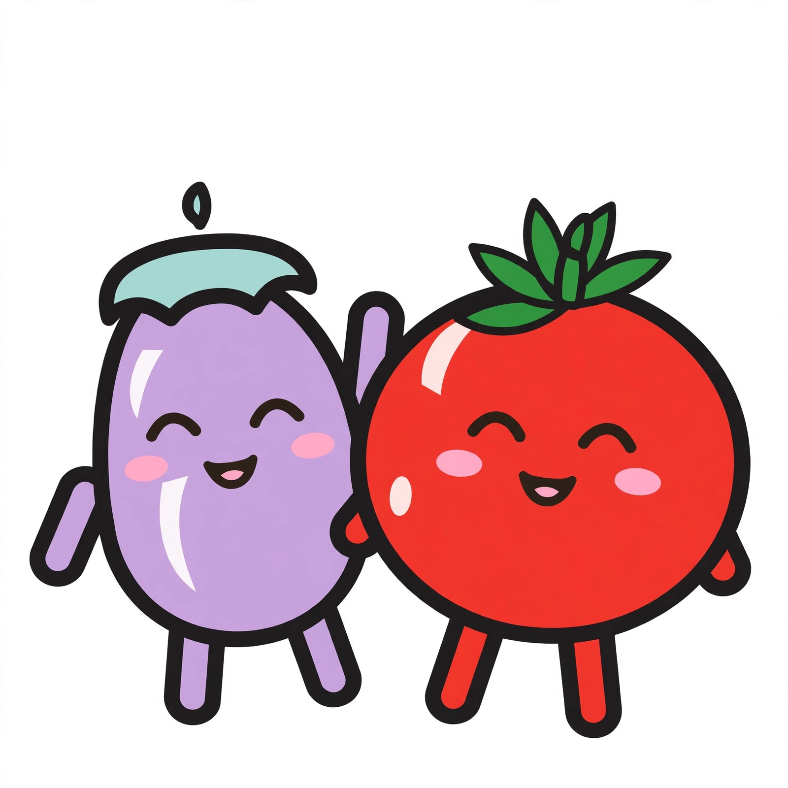
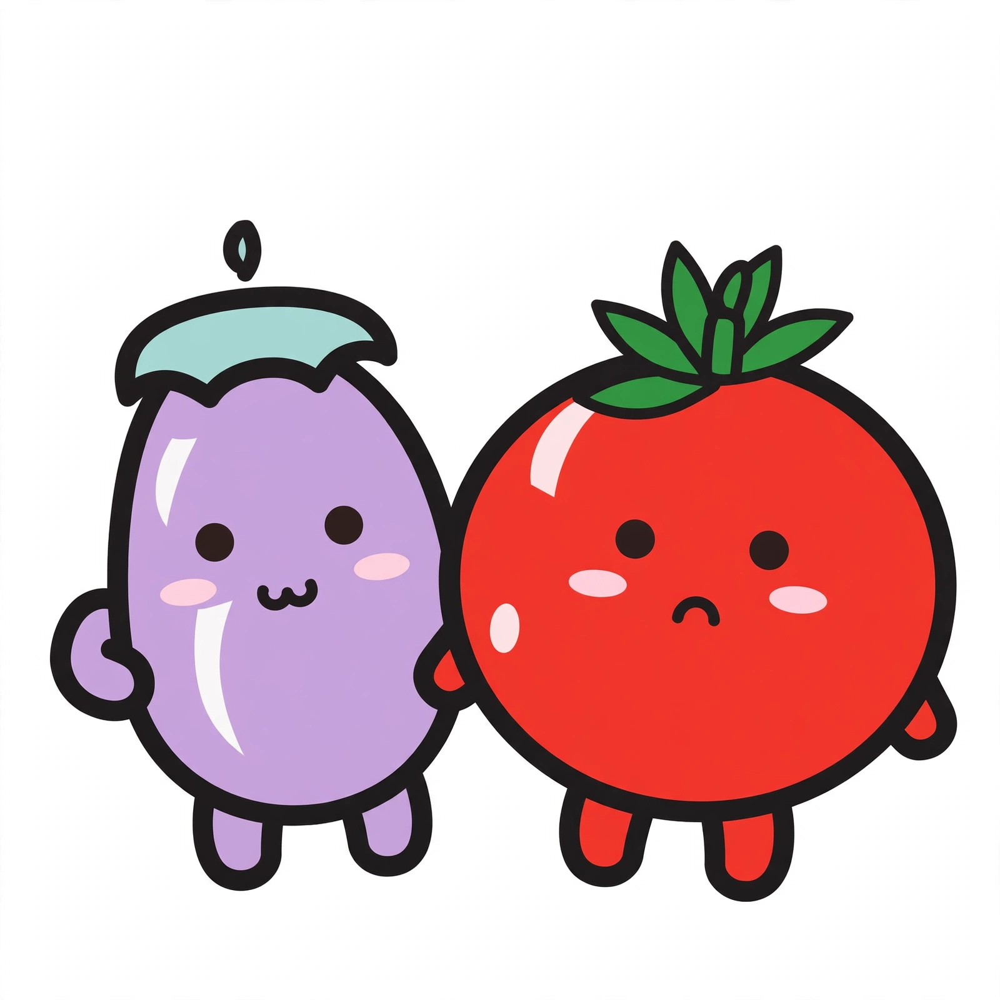
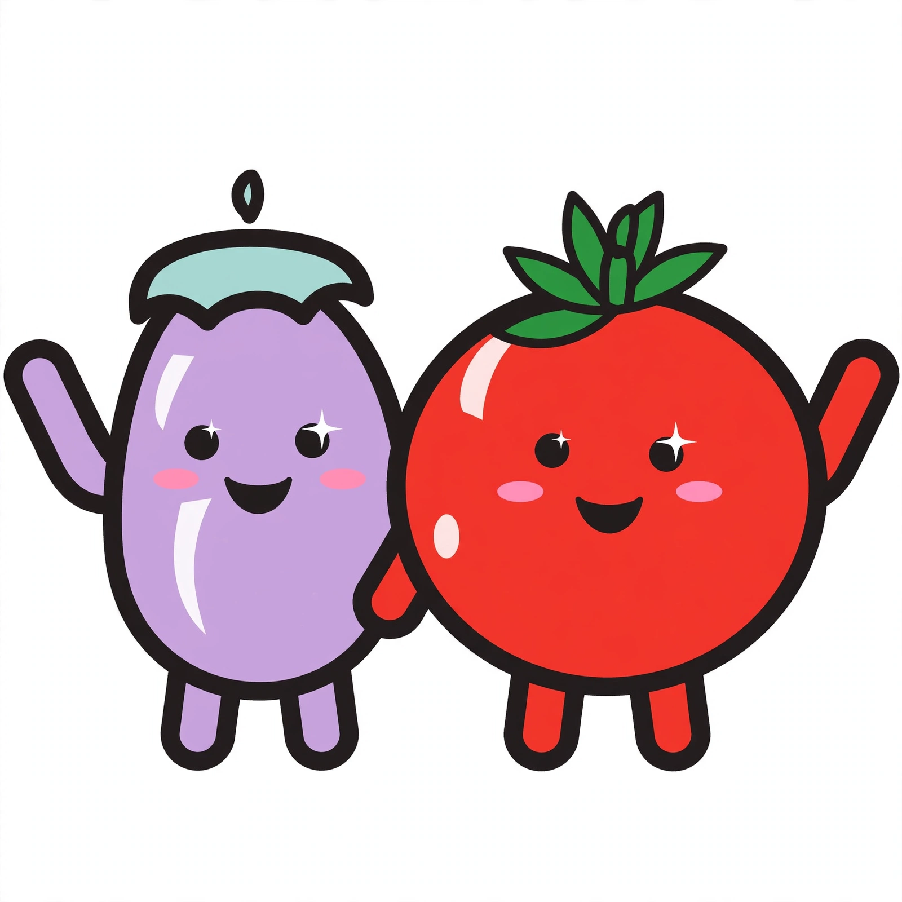

現行今の絵

顔：黒い点目＋小さな口、頬なし。手足：白い棒状の手足。
体の形・比率・色は全案このまま維持しています。変わるのは顔パーツと手足だけです。
体の形・比率・色は全案このまま維持しています。変わるのは顔パーツと手足だけです。
1段家ベーシック

顔：丸くて柔らかい点目＋緩やかな弧の笑口＋ピンクの頬。手足：体色のずんぐりした短い手足（足つき）。
段家の親キャラにいちばん近い、王道の寄せ方です。
段家の親キャラにいちばん近い、王道の寄せ方です。
2さら風・愛嬌

顔：縦長の目＋小さなまつ毛、U字に開いた笑口＋頬。手足：体色で両手を上げたポーズ。
段さら（黄・日記担当）の愛嬌のある顔つきに寄せた案です。
段さら（黄・日記担当）の愛嬌のある顔つきに寄せた案です。
3にっこり閉じ目

顔：太く柔らかい閉じ目＋舌がチラッと見える開いた口＋頬。手足：体色のずんぐりした手足。
現行ナスの笑顔の流れを残しつつ、段家風に柔らかくした案です。
現行ナスの笑顔の流れを残しつつ、段家風に柔らかくした案です。
4ほんわかミニマル

顔：低めの小さな点目＋ω口、頬は淡く。手足：いちばん短く、体に寄せた手足。
段家の落ち着いた空気感に寄せた、静かでほんわかした案です。
段家の落ち着いた空気感に寄せた、静かでほんわかした案です。
5元気スマイル

顔：キラッと光る点目＋開いた笑口＋しっかりめの頬。手足：体色で、片手を上げて手を振るポーズ。
5案の中でいちばん明るく元気な案です。
5案の中でいちばん明るく元気な案です。